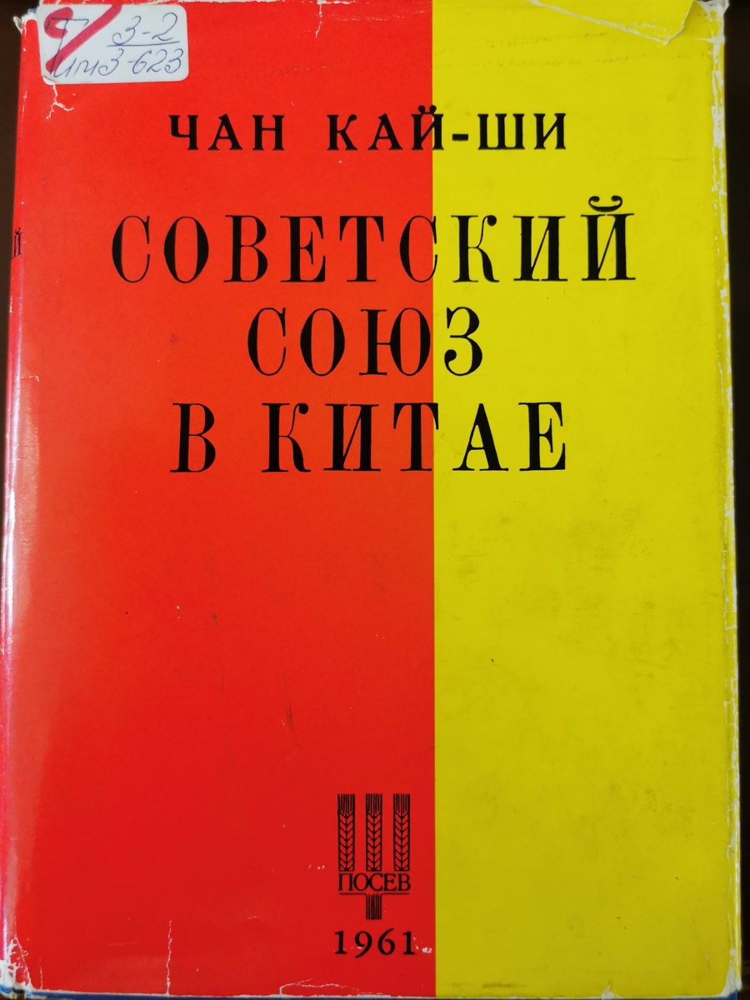
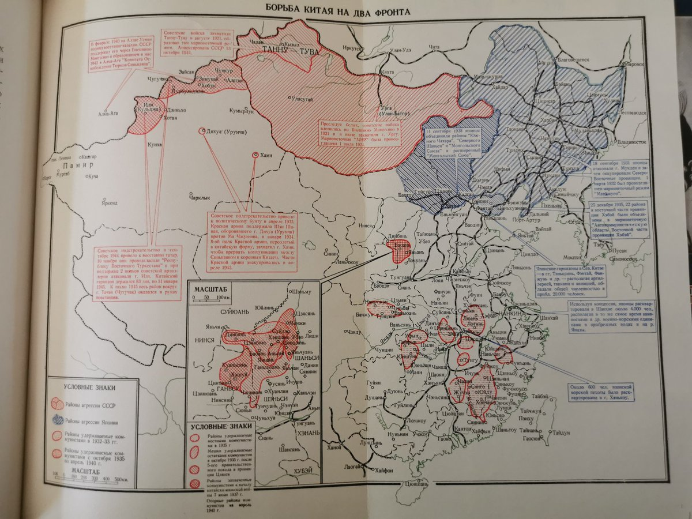
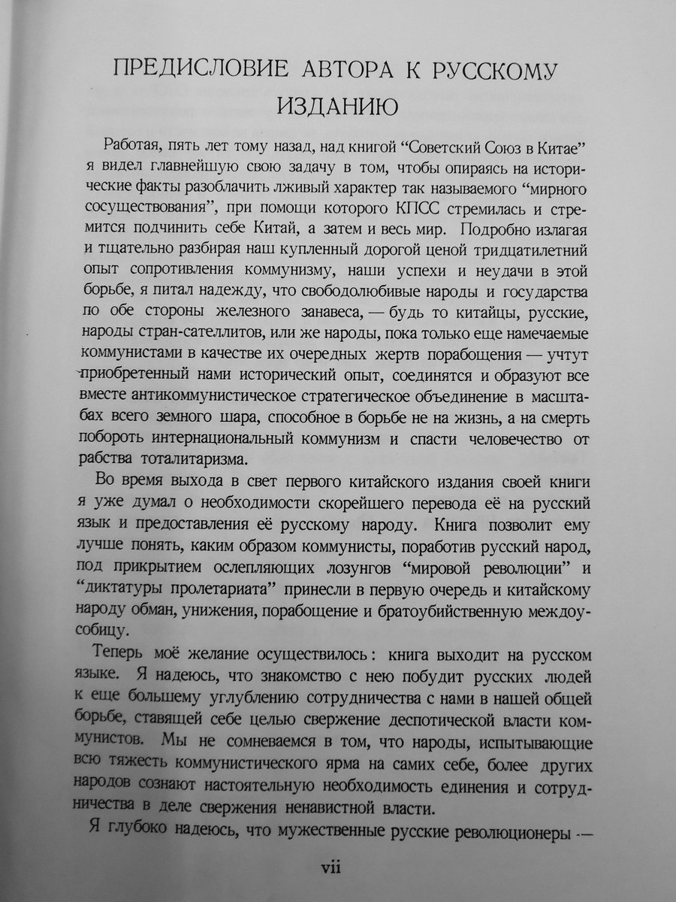

❂🇩🇪🇪🇺🌹Ashley Block🍥🇹🇼🏳️⚧️❀
@bolckAshley
1960年，他們甚至出版了蔣介石的俄語著作《蘇聯在中國》。冷戰期間，他們變得更加自由，更接近西方民主派。
（此外，這本書還有蔣介石寫給俄羅斯讀者的序言──也許是他唯一寫給俄羅斯人的話）



❂🇩🇪🇪🇺🌹Ashley Block🍥🇹🇼🏳️⚧️❀
@bolckAshley
二戰期間，NTS 積極反對希特勒和史達林。他們幫助俄羅斯解放運動（俄羅斯民族主義者稱之為 1941-45 年間所有反蘇聯運動）制定他們的計劃，還在被佔領土上進行反對斯大林和希特勒的宣傳。
冷戰時其成為反共陣線的一部分：例如他們與🇹🇼有很多聯繫，他們在1950年代在台灣有一個「自由俄羅斯」廣播電台。